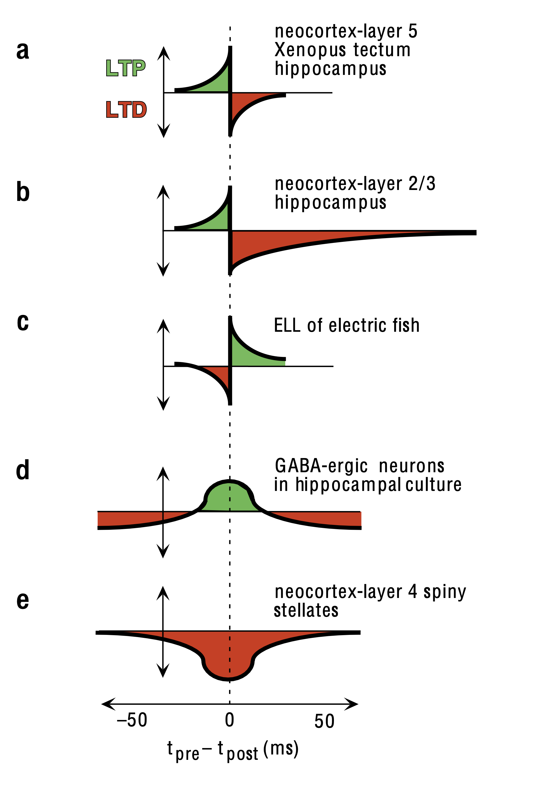
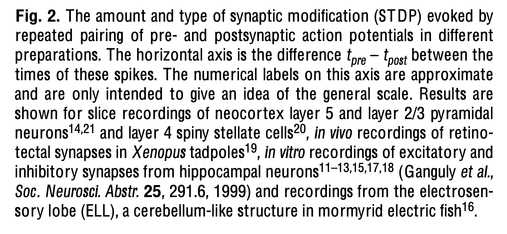

Consider how the amount and type of spike-time-depedent plasticity (STDP) evoked by pairing of pre- and postsynaptic action potentials depends on the preparation and neuronal connection being studied. The figure below is from Abbott, L.F. and Nelson, S.B., 2000. Synaptic plasticity: taming the beast. Nature Neuroscience, 3:1178-1183.


Types of Short-Term Synaptic Plasticity
Feedforward plasticity depends on presynaptic activity (facilitation and depression)
Feedback plasticity depends on postsynaptic activity (retrograde messengers released from dendrites that regulate release of neurotransmitter)
Associative plasticity depends on the relationship between between pre- and post-synaptic activity. Less is known about the mechanisms that could implement associative plasticity on seconds to tens of seconds timescale.
Hebbian plasticity is a positive-feedback process because effective synapses are strengthened, making them even more effective, and ineffective synapses are weakened, making them less so. This tends to destabilize postsynaptic firing rates, reducing them to zero or increasing them excessively. An effective way of controlling this instability is to augment Hebbian modification with additional processes that are sensitive to the postsynaptic firing rate or to the total level of synaptic efficacy. (Abbott and Nelson, 2000)
Synaptic Scaling
A biological mechanism that globally modifies synaptic strengths, called synaptic scaling, occurs in cluttered networks of neocortical, hippocampal and spinal-cord neurons. Phamacologically blocking ongoing activity in these systems causes synaptic strengths ... to increase in a multiplicative manner. Conversely, enhancing activity by blocking inhibitions scales down [synaptic strengths]. ... Synaptic scaling is a non-Hebbian form of plasticity because it acts across many synapses and seems to depend primarily on the post synaptic firing rate rather than on correlations between pre-and postsynaptic acuity. (Abbott and Nelson 2000)
STDP can stabilize post-synaptic firing rates
STDP is a synapse-specific Hebbian form of plasticity, and although we might expect that the firing rate instability that plague purely Hebbian models would also occur with STDP, this is not the case. STDP can regulate both the rate and variability of postsynaptic firing. ... To see how STDP can stabilize postsynaptic firing rates, imagine a neuron that initially receives excessively strong uncorrelated excitatory drive from many synapses, making it fire at an unacceptably high rate. The strong multi-synaptic input is effectively summed into a relatively constant input current. In response to such input, a neuron will fire in much the same way as it would in response to the injection of the equivalent constant current through ah electrode, by firing rapidly and regularly. In such a situation, the neuron acts as an integrator, and there is little correlation between the timing of its spikes and those of its inputs. If LTD dominates over LTP for random pre and post-synaptic spike pairings, this leads to an overall weakening of synatptic efficacy. (Abbott and Nelson 2000)
If two neurons and reciprocally connected and have correlated activities, Hebbian plasticity will typically strengthen the synapses between them in a bidirectional manner. This can produce strong excitatory loops that cause recurrently connected networks to suffer from self-excitatory instabilities. STDP is temporally asymmetric.... If neurons with correlated activities tend to fire in a specific temporal order, synapses from the leading neuron to the lagging neuron will be strengthened, whereas synapses in the opposite directions will be weakened. Thus, the temporary asymmetry of STDP suppresses strong recurrent excitatory loops. As a result, it is possible for stable recurrent networks to develop based on STDP without generating the runaway network activity typically resulting from Hebbian plasticity. (Abbott and Nelson 2000)